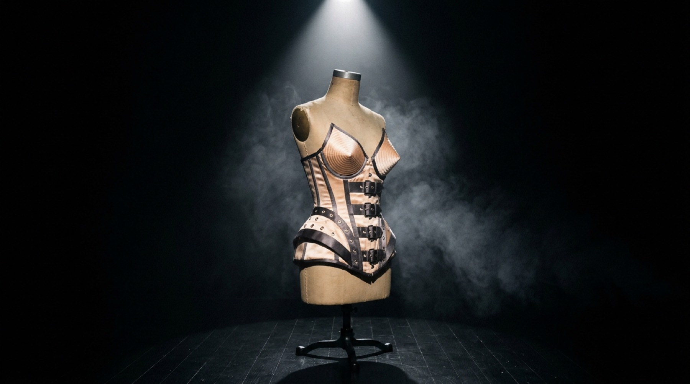
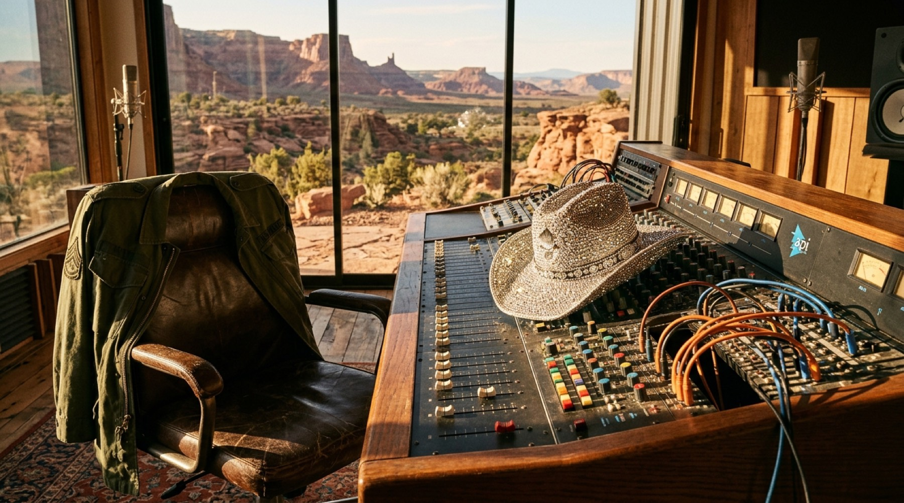
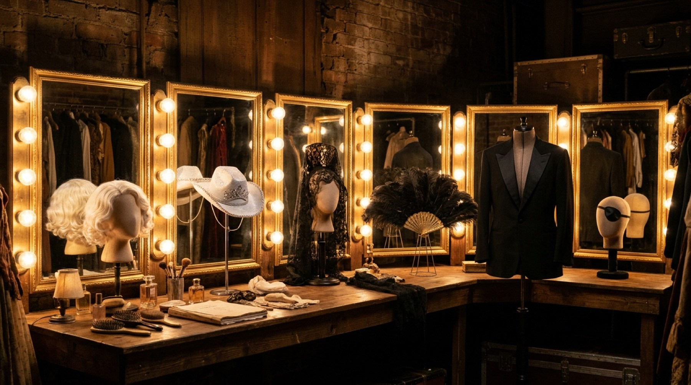
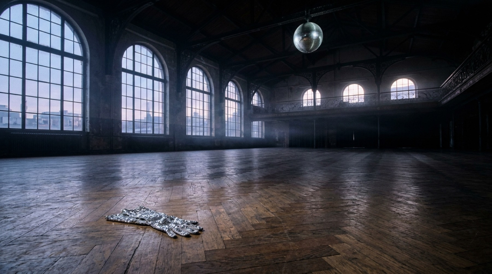
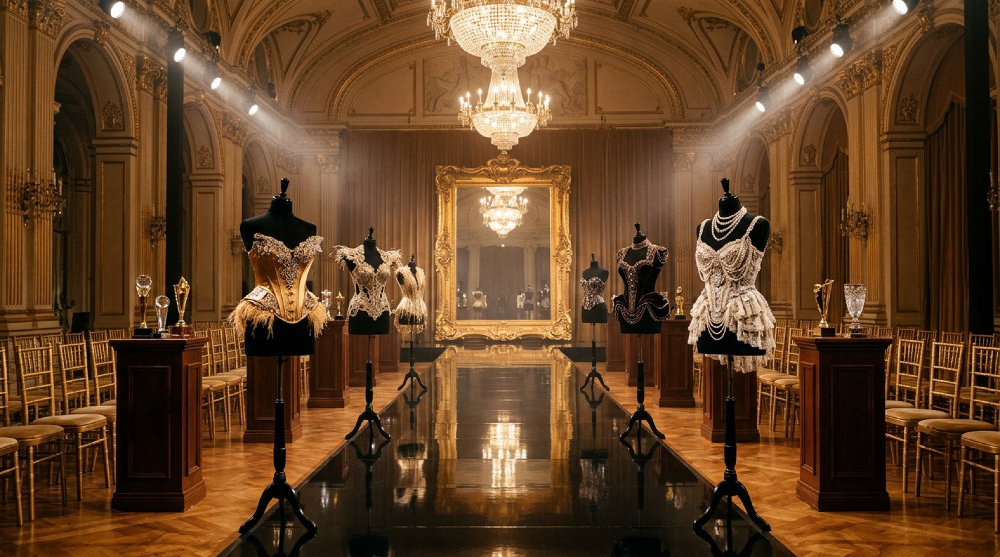
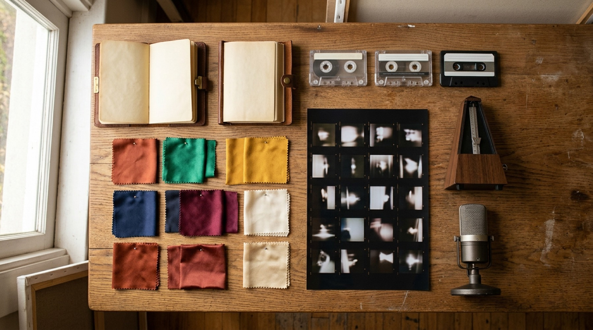

Madonna 1983Like a Virgin 1984True Blue 1986Like a Prayer 1989Erotica 1992Bedtime Stories 1994Ray of Light 1998Music 2000American Life 2003Confessions on a Dance Floor 2005Hard Candy 2008MDNA 2012Rebel Heart 2015Madame X 2019Confessions II 2026Madonna 1983Like a Virgin 1984True Blue 1986Like a Prayer 1989Erotica 1992Bedtime Stories 1994Ray of Light 1998Music 2000American Life 2003Confessions on a Dance Floor 2005Hard Candy 2008MDNA 2012Rebel Heart 2015Madame X 2019Confessions II 2026
Illustrative AI image · A mirror ball in a cathedral nave
Before the needle drops
How to read a career that refuses to hold still
MMadonna is usually summed up in one word: reinvention. This magazine sets that word aside for a while, because it explains too little. Many stars change their hair and their costumes. Very few return to the top of the US album chart forty-three years after their debut, with a record critics call one of their best. Something steadier than a wardrobe must be at work.
The working proposal of this edition is that Madonna’s career is best understood as a method of inquiry. Across fifteen studio albums — from Madonna in 1983 to Confessions II in 2026 — she used dance music, songwriting, video, fashion, cinema, photography, religious symbols and celebrity itself as materials for examining autonomy, sexuality, faith, mortality, fame and family. The surfaces moved; the questions stayed.
The tracks are arranged like a double album. Side A follows the musical progression, era by era. Side B reads her aesthetic thought. Side C follows the influences she absorbed and the culture she changed in return. Side D turns everything into lessons for anyone who makes things, and a hidden track at the end runs the full deep-pattern analysis in eight movements.
Each track opens with the story, told plainly. That is the surface. Then come four deeper layers on a tabbed ‘mixing desk’: structural (what mechanisms produced this?), systemic (what feedback loops surround it?), symbolic (what older pattern does it echo?) and meta (why do we ask at all?). A recursive challenge follows, played as an A-side and a B-side: what would make the reading wrong, and what larger frame could hold both the reading and its opposite?
Interpretive sentences are marked by how sure they are, so you can always tell a documented fact from a pattern we think we see. Comparisons with science, myth or economics are juxtapositions, offered to sharpen attention, never claims about what Madonna intended. Facts come from the research essay this edition retells; where we add anything, the text names its source or labels it.
Reinvention is what it looks like from the outside. From the inside, it looks like research.
The discography as an argument
Fifteen albums, one method
Read in order, the studio albums behave less like a catalogue than like a long argument conducted in sound. The Rock & Roll Hall of Fame sums up the arc in a breath — synth-pop giving way to R&B, rock, house, electronica, industrial and EDM textures — and notes that her ability to ‘shapeshift’ stayed constant throughout.
Choose a record below to see its sound, its themes, its key tracks, the producers who built it with her, and how it was received. The chart plots two things at once: how high each album climbed in the United States, and how many principal producers the source essay’s table names for it. Watch the bars. They carry one of the weak signals this edition follows.
Top: US Billboard 200 peak for each studio album (1 = number one). Bottom: the number of principal production collaborators listed for that album in the research essay’s table (+ means the table adds ‘and others’). Each dot links to the track that discusses the album. Inference The four single-producer albums are among the most admired, while the widest producer networks cluster in 2008–2019. The counterexamples, Like a Prayer and Bedtime Stories, are weighed on Track 07 and in the hidden track.
Album 01 of 15
Madonna
1983 released#8 US peak2 principal producers
The blueprint: club validation first, radio second, and the image composed as carefully as the song.
US No. 1 and commercially strong, though later criticism often hears it as more trend-driven than her most distinctive records. It closed her original Warner era.
House, acid house, 2-step, French touch, trip-hop, continuous-mix club music
Themes
Memory, grief, family, vulnerability, ageing, queer and club community, healing
Key tracks
“I Feel So Free”, “Danceteria”, “Fragile”, “The Test”, “L.E.S. Girl”
Built with
Stuart Price, with contributions from Arca, Mirwais, PARISI and others; guests include Lola Leon, Stromae, Sabrina Carpenter and Martin Garrix
Reception
US No. 1 — her tenth Billboard 200 No. 1. Metacritic 82 from 18 reviews; Pitchfork and others called it her strongest album in roughly two decades.
Two side projects bent the main arc. I’m Breathless (1990), written around Dick Tracy, pushed her into Stephen Sondheim songs and 1930s pastiche, with “Vogue” appended. Evita (1996) demanded formal vocal retraining, won her the Golden Globe for Best Actress, and its soundtrack reached No. 2 in the US. Both sit outside the fifteen-album canon, but Tracks 05 and 12 show how much they changed it.
Start here
Seven videos to watch before you read
If you know Madonna mainly as a headline, begin with these. Each was made as a piece of short-form cinema rather than an advertisement, and each comes back later in the magazine. The card tells you what to watch for, and a short deep-pattern note previews a thread the tracks will pull.
All seven play from Madonna’s official channel. Read the card first, then press play: the point is to watch with a question in mind.
01
Madonna1989Direct connection
“Like a Prayer”
Burning crosses, a statue of a Black saint who comes alive, a gospel choir, and a young Black man arrested for a crime he did not commit. The video stages Catholic imagery as a drama of conscience and racial injustice, not obedience. Watch how ecstasy and devotion share the same body language. Inference Here is the template of her whole career: the church’s grammar, reassigned to the individual.
Evidence Title track and lead single of Like a Prayer (1989), video directed by Mary Lambert; discussed on Track 03.
02
Madonna1989Direct connection
“Express Yourself”
Fincher borrows the machinery of Fritz Lang’s Metropolis — the workers, the monumental industry, even the closing epigraph — and Madonna turns its class allegory into a drama of gender, desire and self-possession. Watch who looks at whom, and who holds power in each frame. Observation The final title card adapts the moral of Lang’s film.
Evidence Directed by David Fincher; Madonna has described overseeing sets, costumes, casting and cinematography, even the choice of the cat. Discussed on Track 12.
03
Madonna1985Direct connection
“Material Girl”
The pink gown, the staircase and the chorus of suitors come almost frame for frame from Monroe, but the story around the number undercuts the song: offstage, the star falls for a man who pretends to have no money. Watch the gap between the number and its frame. Inference The blonde archetype is being operated, not merely inhabited.
Evidence The video restages Marilyn Monroe’s “Diamonds Are a Girl’s Best Friend” from Gentlemen Prefer Blondes (1953); discussed on Track 12.
04
Madonna1990Direct connection
“Vogue”
David Fincher shot it in black-and-white Old Hollywood glamour, while the choreography comes from ballroom culture. The spoken roll-call names screen idols; the bodies perform a dance created by Black and Latino queer communities. Watch the two histories share one frame. Observation Scholars read the video as dissemination and as appropriation, and this magazine holds both readings.
Evidence Made with Shep Pettibone; brought voguing, and dancers associated with the House of Xtravaganza, from Harlem ballroom into global pop. Discussed on Track 13.
05
Madonna1998Direct connection
“Frozen”
In a desert, a dark-robed figure with hennaed hands dissolves into a flock of birds and a black dog and re-forms, over Orbit’s electronics and a mournful string line. Watch the body come apart and come back. Inference After the hardest backlash of her career, the self on screen is no longer armoured. It is fluid.
Evidence Lead single of Ray of Light (1998), produced with William Orbit; video directed by Chris Cunningham. Discussed on Track 05.
06
Madonna2005Direct connection
“Hung Up”
A ticking clock, a mirrored dance studio, a pink leotard, and then strangers dancing on streets, in arcades and in clubs. The video is a hymn to dancing as something everyone already knows how to do. Watch the leap from the private studio to the public street. Hypothesis The dance floor she returns to here is less a nightclub than a commons.
Evidence Lead single of Confessions on a Dance Floor (2005), produced with Stuart Price and built on a sample of ABBA’s “Gimme! Gimme! Gimme!”. Discussed on Track 06.
07
Madonna2026Direct connection
“I Feel So Free”
The newest card: a song from the album that took her back to No. 1 in 2026. Price described the record’s guiding idea as vulnerability turning into strength. This is a visualizer rather than a narrative video, so listen first and watch second. Hypothesis The title states, in four words, the thesis the dance floor has been arguing since 1982.
Evidence From Confessions II (2026), produced with Stuart Price; official visualizer. Discussed on Track 08.
A
Side A
Musical progression
Eight eras, from a downtown club demo to a tenth No. 1 album. Watch the collaborators change, and watch what never does.
Illustrative AI image · Pointe shoes on a downtown fire escape
01
Side A · Track 01 · 1958–1983
Formation: a girl who wanted to be heard
From a Michigan childhood marked by loss to a club demo in downtown New York, and the first draft of a method.
Sound
Post-disco, electro, synth-pop, New York club music
Look
Thrift-store layers, lace, rubber bracelets, crucifixes worn as jewellery
With
Mark Kamins, Reggie Lucas, John ‘Jellybean’ Benitez
“Everybody” (1982) · Madonna (1983)
MMadonna Louise Ciccone was born on 16 August 1958 in Bay City, Michigan, into a large Italian-American Catholic family. In December 1963, when she was five, her mother — also named Madonna — died of breast cancer. Decades later she connected the loss to her drive: part of what fuelled her ambition, she said in a 1986 interview, was the desire ‘to be heard’, and in some sense to find her mother.
Dance gave her the first identity she could build on purpose. As a teenager she studied ballet, and she has credited a gay dance teacher with opening a door into culture, difference and self-invention. Through dance she met Martha Graham’s idea of women as forceful, active presences, and a world where role-playing and gender fluidity were ordinary long before she entered pop.
In the late 1970s she left her dance studies at the University of Michigan for New York, intending to become a dancer. The years that followed were precarious — dance jobs, modelling, odd work, bands, demos — and dangerous. She later recalled that an early opportunity in Paris could have made her a manufactured star; she came home because she felt unready and wanted to earn her own development. Downtown, she moved among Keith Haring, Jean-Michel Basquiat, Martin Burgoyne and Andy Warhol, and argued with them about art that should reach everyone.
The break came through the club, not the radio. DJ Mark Kamins helped bring her demo to Sire Records, and “Everybody” (1982) reached No. 3 on Billboard’s dance chart. The debut album followed in 1983, with “Holiday”, “Borderline” and “Lucky Star”. It reached No. 8 and stayed on the chart for 168 weeks, and she wrote five of its eight songs. The pattern was already complete: dance floor first, radio second, and a persona built as much from clothes and video as from sound.
Club validation first, radio second, and the image composed as carefully as the song.
listening booth
Listening booth
MadonnaDirect connection
“Everybody” (1982)
Listen for how little there is: a drum machine, a bass line, and a vocal that invites you onto the floor rather than asking you to admire a singer. The low-budget video, shot in a club, presents her as one dancer among many. Inference The song’s whole argument is in its title.
Evidence Her first commercial single; DJ Mark Kamins helped bring the demo to Sire Records, and it reached No. 3 on Billboard’s dance chart.
MadonnaDirect connection
“Lucky Star” (1983)
A white backdrop, a few dancers, rubber bracelets, lace and a crucifix earring: the look a generation copied was built on almost no budget. Listen to the shimmering synthesizer hook and the economy of the melody. Inference This is club music distilled into a radio song without losing its pulse.
Evidence Single from the debut album Madonna (1983).
Illustrative AI image · Lace, rubber and pearls, 1984
02
Side A · Track 02 · 1984–1987
Pop command: the bride, the material girl, the songwriter
A wedding dress on the VMA stage, a Nile Rodgers record, and the quiet arrival of a writer and producer.
Sound
Pop-funk, dance-pop, rock, Latin pop, cinematic balladry
Look
Wedding gown and ‘Boy Toy’ belt; Monroe-pink satin; the cropped platinum of True Blue
With
Nile Rodgers, Stephen Bray, Patrick Leonard
Like a Virgin (1984) · Desperately Seeking Susan (1985) · True Blue (1986)
IIn 1984 Madonna made Like a Virgin with a single producer, Nile Rodgers, whose funk precision gave her songs a polished, muscular gloss. The title song became her first No. 1 single in the United States, and the album her first No. 1 album. At the first MTV Video Music Awards that September she performed “Like a Virgin” in a wedding dress, descending from a giant wedding cake and rolling across the stage. The performance turned a rising club singer into a global figure, and into a permanent argument about what a young woman was allowed to do in public.
The same record carried “Material Girl”, whose video restaged Marilyn Monroe’s “Diamonds Are a Girl’s Best Friend” and then quietly undercut the song with its frame story. In 1985 she appeared in Desperately Seeking Susan, a film about female autonomy and swapped identities, and married Sean Penn.
True Blue (1986) changed the balance of power. Working with Stephen Bray and Patrick Leonard, and credited as a producer herself, she widened the palette to rock, Latin pop and cinematic balladry. “Live to Tell” was a dark, sustained ballad; “Papa Don’t Preach” put an unmarried teenager’s pregnancy at the centre of a pop single; “Open Your Heart” and “La Isla Bonita” followed. The album reached No. 1 in the US and in 27 other countries.
The scale was new, but the more important change was quieter. By the second half of the decade Madonna was no longer a vocalist being produced. She was writing, producing, choosing collaborators and directing the image — behaving, in effect, like a creative director whose main medium happened to be pop.
The wedding dress was a costume. The authorship was real.
listening booth
Listening booth
MadonnaDirect connection
“Like a Virgin” (1984)
Listen to the bass line and the bright, clipped guitar: funk discipline wrapped around a song about feeling new. The video, shot partly in Venice with a gondola and a lion, pairs wedding-white innocence with a knowing camera. Inference The ambiguity is the point. The song is sincere and staged at once.
Evidence Title track of Like a Virgin, produced by Nile Rodgers; her first US Hot 100 No. 1.
MadonnaDirect connection
“Live to Tell” (1986)
A slow, minor-key ballad about keeping a secret in order to survive. Leonard’s harmonic depth gives her room to sing low and long, without dance-floor armour. Inference The title will echo through the whole career, and in 2023 it returns on the Celebration Tour as a memorial (see Track 11).
Evidence Single from True Blue, written and produced with Patrick Leonard; it also served as the theme for the film At Close Range (1986).
MadonnaDirect connection
“Papa Don’t Preach” (1986)
A teenage girl tells her father she is pregnant and keeping the baby. Strings, a driving beat, and a lyric that put family conflict and a young woman’s choice into a mainstream single; it drew praise and protest from opposite camps. Observation Three years later the father returns in a far darker song, “Oh Father”.
Evidence Single from True Blue (1986).
Illustrative AI image · A pew in a field of candles
03
Side A · Track 03 · 1987–1989
Like a Prayer: the image turns inward
Divorce, Catholic guilt and a lost mother come into the studio, and a sponsorship deal goes up in flames.
Sound
Gospel-pop, funk, rock, soul, confessional pop
Look
Dark hair, a slip dress and crucifixes; the gospel choir; the burning crosses
With
Patrick Leonard, Stephen Bray, Prince
Like a Prayer (1989)
HHer marriage to Sean Penn ended in divorce in 1989, after a turbulent three years. The same period reopened older wounds — a mother lost at five, a strict Catholic childhood, a complicated relationship with her father — and Madonna took all of it into the studio with Patrick Leonard and Stephen Bray, with Prince contributing. The result, Like a Prayer, is the record on which the public image turned inward.
The title song arrives on a gospel choir. Its video, made with the director Mary Lambert, gathered burning crosses, stigmata, a statue of a Black saint who comes alive, and a young Black man arrested for a crime he did not commit. Catholic imagery was not mocked; it was reassigned — to female desire, to racial justice, to individual conscience.
Pepsi had licensed the song for a global advertisement. When religious groups protested against the separate music video, the company dropped the campaign. Madonna did not withdraw the video. The single went to No. 1 in the United States and the United Kingdom, and the album topped charts internationally.
Around the hits lay harder songs. “Express Yourself” demanded self-respect in love and became, in David Fincher’s video, a drama of power borrowed from Metropolis. “Oh Father” spoke to a father and to the grief beneath family conflict; “Till Death Do Us Part” is widely heard as a portrait of the collapsing marriage; “Promise to Try” speaks to the mother she lost. She later said that Catholic guilt, and the idea of being born a sinner, stayed with her long after she left orthodox practice. Like a Prayer is where that inheritance became material, and critics have treated it ever since as the moment she became an album artist rather than a singles phenomenon.
She let the sponsorship burn rather than redesign the work around the sponsor’s discomfort.
Editorial resonance
In art: Gian Lorenzo Bernini, The Ecstasy of Saint Teresa (1647–52)
Gian Lorenzo Bernini, The Ecstasy of Saint Teresa (1647–52), Cornaro Chapel, Santa Maria della Vittoria, Rome — photograph by Livioandronico2013, CC BY-SA 4.0, via Wikimedia Commons
Bernini carved the Spanish mystic at the moment she describes in her autobiography: an angel’s arrow piercing her heart and leaving her, in the old English translation, ‘all on fire with a great love of God’, in a pain so sweet she wished it would never end. The sculptor gave spiritual rapture the body of erotic surrender, and the Church placed it above an altar. Speculation Beside Like a Prayer, it shows that the fusion of devotion and desire Madonna was accused of inventing is one of Catholic art’s oldest languages. No direct influence is claimed.
A slow, string-laden song addressed to a father, with a black-and-white video that returns to a child’s memory of her mother’s death. Notice how restrained it is: no catharsis, only the slow surfacing of an old grief. Inference This is the album’s private centre, where the family wound is finally sung out loud. (“Like a Prayer” and “Express Yourself” are in the Start Here section above.)
Evidence Single from Like a Prayer, written and produced with Patrick Leonard; video directed by David Fincher.
MadonnaDirect connection
“Till Death Do Us Part” (1989)
A bright, almost jaunty arrangement under a lyric about a marriage turning cold and violent. The contrast is the device: the music keeps dancing while the words describe a house falling apart. Inference It is an early case of a technique she refines for decades — grief carried in under an upbeat surface.
Evidence Album track on Like a Prayer; later criticism connects it with the end of her marriage to Sean Penn.

Illustrative AI image · A corset under a spotlight
04
Side A · Track 04 · 1990–1995
Erotica and Bedtime Stories: the body under siege
A book, an album and a film in one season push sexuality to saturation; then a quieter record answers the backlash.
Sound
Deep house, hip-hop, cool R&B — then trip-hop and dream-pop
Look
The cone-bra corset (1990); the dominatrix of Erotica (1992); soft-focus Old Hollywood glamour (1994)
With
Shep Pettibone, André Betts; Babyface, Dallas Austin, Nellee Hooper, Dave Hall
Erotica (1992) · Sex (1992) · Bedtime Stories (1994)
TThe 1990s began at full volume. The Blond Ambition tour of 1990 put Jean Paul Gaultier’s cone-bra corset on arena stages; “Vogue” carried Harlem ballroom into global pop; Truth or Dare (1991) mixed concert spectacle with apparently intimate backstage footage. In 1992 she co-founded Maverick, an artist-run company. Then, within a few months, came the album Erotica, the photo book Sex and the film Body of Evidence.
Erotica, made with Shep Pettibone and André Betts, is a record of deep house, hip-hop beats and cool, jazz-inflected R&B. Its subjects are sex and power, but also loneliness, shame, intimacy and death: “In This Life” is an elegy for friends lost to AIDS, while “Rain” and “Deeper and Deeper” offer tenderness and release. The record reached No. 2 in the US. But the saturation of sexual imagery overwhelmed how it was heard. Contemporary reviews ranged from fascination to contempt, and later critics, Pitchfork among them, describe the period as a real creative and emotional low.
Her answer was not to disown the subject but to change its register. Bedtime Stories (1994), built with Babyface, Dallas Austin, Nellee Hooper and Dave Hall, moved from explicit theatre into interior R&B and trip-hop. “Secret” is hushed and guitar-led; “Human Nature” answers the censors directly and refuses to apologise; “Take a Bow”, a lush ballad of romantic failure, spent seven weeks at No. 1.
Over time the verdicts reversed. Erotica has been reassessed as one of her strongest and most formally daring albums — most powerful, Pitchfork argued in 2026, precisely because erotic fantasy cannot shut out death, social judgment or vulnerability.
Erotic fantasy cannot shut out death, judgment or vulnerability, and the record knows it.
listening booth
Listening booth
MadonnaDirect connection
“Erotica” (1992)
Whispered vocals over a slow, heavy house groove, with a video assembled from grainy fragments. Listen past the persona to the production: spacious, minimal, cold and bright. Inference The track is less a seduction than a study of power — who speaks, who listens, who is allowed to name desire.
Evidence Title track of Erotica, produced with Shep Pettibone and André Betts; the video was restricted to late-night play on MTV.
MadonnaDirect connection
“Rain” (1993)
In the middle of the most explicit album of her career sits a song about rain as healing and release. Romanek’s cool, Japanese-styled video shows her being filmed by a crew, the machinery of image-making left in view. Inference Tenderness, not provocation, is the record’s quiet centre.
Evidence Single from Erotica; video directed by Mark Romanek.
MadonnaDirect connection
“Secret” (1994)
An acoustic guitar figure, a hushed vocal, a lyric about a happiness kept inside. After the noise of 1992 it sounds almost whispered, and the grainy video drifts through night-time streets and a club. Inference Lowering the volume was the strategy — the way to be heard again.
Evidence Lead single from Bedtime Stories, produced with Dallas Austin.
MadonnaDirect connection
“Take a Bow” (1994)
Orchestral, slow and wounded: a farewell to a lover who performed love rather than felt it. The video, set around a bullfight in Spain, frames romance as ritual combat. Inference The song turns the critique of performance on someone else — and on an audience that had just accused her of performing everything.
Evidence Single from Bedtime Stories, written and produced with Babyface; seven weeks at No. 1 in the US.
Illustrative AI image · A lotus at dawn
05
Side A · Track 05 · 1996–2001
Ray of Light: the voice, the child, the light
Evita retrains the voice, motherhood rearranges the questions, and electronica gives them a sound.
Sound
Electronica, ambient, techno, trip-hop — then electro-funk and folktronica
Look
Hennaed hands and black chiffon; then the rhinestone cowgirl
With
William Orbit, Patrick Leonard, Mirwais Ahmadzaï
Evita (1996) · Ray of Light (1998) · Music (2000)
Evita (1996) demanded something pop had never asked of her: formal vocal retraining, and sustained dramatic singing across an entire film score. The film won three Golden Globes, including Best Actress for Madonna, and its soundtrack reached No. 2 in the US. The same year her daughter Lourdes was born.
By 1998 she was talking about studying Kabbalah alongside Buddhism and Hinduism, practising Ashtanga yoga and reading Autobiography of a Yogi — treating these traditions not as rival dogmas but as paths toward common truths. With the producer William Orbit, and Patrick Leonard on several compositions, she made Ray of Light: electronica, ambient washes, techno pulses, trip-hop and Middle Eastern textures carrying songs about motherhood, mortality, spiritual awakening, detachment from fame and rebirth.
“Frozen” is mournful and vast. “Ray of Light” races with ecstatic velocity. “Drowned World” renounces the fame she had chased; “Nothing Really Matters” finds meaning in love given away; “Mer Girl” closes the album with a haunted walk among graves. The record reached No. 2 in the US and No. 1 widely elsewhere, won Grammys including Best Pop Album and Best Dance Recording, and brought the largest critical reappraisal of her career.
Music (2000) kept the inquiry and changed the instrument. With the French producer Mirwais Ahmadzaï, and Orbit again, she made electro-funk full of digital glitches, folktronica and country signifiers — a rhinestone cowgirl in digital space. The title track became her twelfth Hot 100 No. 1 and the album her first US No. 1 since Like a Prayer. That year she married Guy Ritchie.
It did not succeed because she changed her hair. Her questions and her production language changed together.
listening booth
Listening booth
MadonnaDirect connection
“You Must Love Me” (1996)
Listen to the voice before anything else: lower, steadier and more open than on the 1980s records. The song asks a dying woman’s question — why does he love me now? — and she sings it without tricks. Inference The retraining Evita demanded is audible here, and it made the long, sustained lines of Ray of Light possible.
Evidence Written by Andrew Lloyd Webber and Tim Rice for the film of Evita; recorded by Madonna after formal vocal training.
MadonnaDirect connection
“Ray of Light” (1998)
A racing surge of guitar and synthesizers set to time-lapse footage of a city — commuters, traffic and clubs sped into a blur — while she dances through it. Listen to the breathless, ecstatic vocal. Inference Speed here is not stress but transcendence: the city seen from outside, as a pattern of light. (“Frozen” is in the Start Here section above.)
Evidence Title track of Ray of Light, produced with William Orbit; winner of the Grammy for Best Dance Recording.
MadonnaDirect connection
“Drowned World/Substitute for Love” (1998)
A slow electronic swell under a lyric that renounces the fame she once wanted as a ‘substitute for love’. In the video she is pursued by photographers on motorbikes. Inference The song reads as an inventory of what fame cost and what a new kind of love restored.
Evidence Opening track of Ray of Light.
MadonnaDirect connection
“Music” (2000)
A filtered, stuttering electro-funk groove in praise of the one thing that ‘makes the people come together’. Mirwais chops the beat into glitches, then lets it run. Inference After an album of solitude and transcendence, the next thought is community: the dance floor as a place where very different people meet.
Evidence Title track of Music, produced with Mirwais Ahmadzaï; her twelfth US Hot 100 No. 1.

Illustrative AI image · A cowboy hat on a mixing desk
06
Side A · Track 06 · 2003–2007
From American Life to the dance floor
A stark record about privilege and war, a withdrawn video, a label dispute — and then a mirror ball.
Sound
Folktronica and acoustic–electronic hybrids, then continuous-mix disco and electro-house
Look
Military fatigues and a beret; then a pink leotard, a boombox and feathered hair
With
Mirwais, Stuart Price, Guy Sigsworth; then Stuart Price alone
American Life (2003) · Confessions on a Dance Floor (2005)
American Life (2003), made mostly with Mirwais and with contributions from Stuart Price and Guy Sigsworth, turned her scrutiny on the country that had made her: capitalism, celebrity, privilege, war, identity and family. Its sound was stark folktronica, acoustic guitars cut against brittle electronics. “Hollywood” mocked the dream factory; “Nothing Fails” was a hymn-like love song; “Mother and Father” went back, once again, to the mother she had lost.
The original video for the title track depicted a militarised fashion show. As the Iraq War began, Madonna withdrew it, saying she feared its meaning would be misread in such a volatile atmosphere. It was an act of self-censorship by an artist famous for refusing it. The album still reached No. 1 in the US, but its reception was polarised; later reassessment has been kinder.
Business pressure arrived at the same time. Maverick, the label she co-founded in 1992, had become an unusually successful artist-run company — it released Alanis Morissette’s Jagged Little Pill — but relations with Warner broke down into a 2004 lawsuit alleging breach of contract and false accounting. The dispute ended with a negotiated sale of her stake to Warner, handled separately from her own recording contract.
Then she went back to the dance floor. Confessions on a Dance Floor (2005), made with Stuart Price alone, was a continuous mix of disco, electro-house and synth-pop, with no gaps between the songs. “Hung Up” rode an ABBA sample; “Sorry” and “Jump” followed. The album went to No. 1 and won the Grammy for Best Electronic/Dance Album. Its subjects — dance as confession, freedom, memory, ego and spiritual struggle — turned the club into a philosophy.
Resilience sometimes means telling principle apart from timing.
Direct connection
On stage: the Confessions Tour, 2006
Oscar Rohena, Madonna during her Confessions Tour (6 July 2006), CC BY 2.0, via Wikimedia Commons
A fan’s photograph from the 2006 tour that carried Confessions into arenas. Even in this grainy, low-light frame the staging is legible: the singer flanked by dancers rather than raised above them, a stark projected sign behind, the band in shadow. Inference The record’s idea — the dance floor as a shared ritual rather than a pedestal — became the architecture of the show.
A loping acoustic-electronic track that turns the dream factory’s glamour into a numb, repeating chant, with a video that restages glossy fashion-photography clichés with a deadpan stare. Inference The artist who had borrowed so much from classic Hollywood now names its emptiness: critique from inside the house.
Evidence Single from American Life, produced with Mirwais.
MadonnaDirect connection
“American Life” (2003), director’s cut
Watch it as a historical document: a catwalk in military dress, a spoken passage about status anxiety and the emptiness of having everything, and an ending designed to provoke. Inference Seen today, without the panic of 2003 around it, it reads more as a satire of spectacle than as an attack on anyone — exactly the misreading she said she feared at the time.
Evidence Title track of American Life; the official channel labels this the director’s cut. The research essay records that the original militarised-fashion-show video was withdrawn as the Iraq War began.
MadonnaDirect connection
“Sorry” (2006)
It opens with apologies spoken in several languages, then refuses every one of them. Price’s pulsing electro-house keeps the anger moving on the dance floor. Inference Confession on this album is not penitence; it is the dancer’s refusal of an apology she does not owe. (“Hung Up” is in the Start Here section above.)
Evidence Single from Confessions on a Dance Floor, produced with Stuart Price.
MadonnaDirect connection
“Jump” (2006)
A song about knowing when to leap, set in a video of free-runners vaulting across Tokyo rooftops. Inference Movement as a way of thinking: the body solves the city’s obstacles the way the song solves an emotional one, by refusing to stand still.
Evidence Single from Confessions on a Dance Floor.
Illustrative AI image · An eye patch before a web of consoles
07
Side A · Track 07 · 2008–2019
The network years: Hard Candy to Madame X
More producers, bigger tours, a leak and a divorce — and a move to Lisbon that sends her looking for a new language.
Sound
R&B-pop and hip-hop; EDM and rave-pop; trap and balladry; global pop with Latin and fado textures
Look
Boxing gloves and candy stripes; the majorette; the matador; the eye patch
With
Timbaland, Pharrell Williams, Martin Solveig, Diplo, Ariel Rechtshaid, Mirwais, Mike Dean and others
Hard Candy (2008) · MDNA (2012) · Rebel Heart (2015) · Madame X (2019)
Hard Candy (2008) closed her original Warner era. Built with Timbaland, Justin Timberlake, Pharrell Williams and Danja, it was R&B-pop and hip-hop with a competitive edge: “4 Minutes”, “Give It 2 Me”, “Miles Away”. It went to No. 1 and sold strongly, though later criticism often hears it as more trend-driven than her most distinctive work. The same year her marriage to Guy Ritchie ended in divorce.
MDNA (2012), with Martin Solveig, William Orbit, Benny Benassi and others, was EDM and rave-pop at stadium scale: another US No. 1, but less coherent than her strongest dance records, and later listeners hear the divorce beneath its club surface. Rebel Heart (2015), made with Diplo, Ariel Rechtshaid, Avicii-related sessions, Kanye West and others, was compromised by a large pre-release leak that forced an accelerated release. Its central polarity, rebellion against vulnerability, is hard to separate from a public custody dispute over her son Rocco, settled in 2016. That year, accepting Billboard’s Woman of the Year award, she argued that older women in pop are punished for remaining sexual, ambitious and visible in ways male peers are not.
Then she moved to Lisbon. Encounters with Portuguese and Lusophone musicians fed Madame X (2019), made with Mirwais, Mike Dean and Diplo, with guests including Maluma, Anitta, Swae Lee and Quavo. It mixes global pop, Latin pop, fado-tinged balladry and experimental electronics, and it is about migration, multiple identity, political violence and gun control, sung through a named character, a secret agent who keeps changing identities as she travels. It went to No. 1, adventurous and divisive in equal measure.
Across the decade she kept touring at enormous scale and widening her musical vocabulary. But the records grew from ever-larger networks of producers, and the centre that had held Ray of Light and Confessions together became harder to hear.
The wider the network, the harder it became to hear the centre.
Direct connection
On stage: the Sticky & Sweet Tour, 2008
David Parsons, Madonna performing on the Sticky & Sweet Tour, Boston (16 October 2008), CC BY-SA 2.0, via Wikimedia Commons
The tour behind Hard Candy. Look at the stage: a revolving circle like a turntable or a boxing ring, dancers masked and anonymous, the singer at the centre. Inference Even when the records followed trends, the live show remained a world she fully authored.
JD Urban, Madonna — Rebel Heart Tour, Philadelphia (24 September 2015), CC BY-SA 2.0, via Wikimedia Commons
A quieter moment from the tour behind Rebel Heart: an acoustic guitar, an embroidered folk dress, lace, eyes closed. Inference The album’s polarity — rebel and heart — shows in the costume itself: lace and armour, folk tenderness inside an arena spectacle.
José Malhoa, O Fado (1910) — public domain, via Wikimedia Commons
Malhoa painted fado as it lived in Lisbon’s working-class neighbourhoods: not a concert but a song in a back room, a singer lost in the music and a listener lost in him. Fado is a music of saudade, longing for what is absent. Inference It is easy to hear why it drew Madonna in Lisbon: an art of grief sung beautifully in public, which is what her late work would attempt on the dance floor. No link to this painting is claimed.
Brass blasts, a marching beat and a duet staged as a race against the clock. Inference The song is about urgency, and it sounds like a career calculating its own time: an artist approaching fifty borrowing the hottest producers of the moment, and making the clock itself the subject.
Evidence Lead single from Hard Candy, with Justin Timberlake and Timbaland.
MadonnaDirect connection
“Ghosttown” (2015)
A ballad set after the end of the world: when everything falls apart, two people stay. Listen to the plain, close vocal in the verses before the chorus opens out. Inference This is the ‘heart’ half of Rebel Heart — vulnerability let into the centre of a record otherwise built on defiance.
Evidence Single from Rebel Heart.
MadonnaDirect connection
“Medellín” with Maluma (2019)
A slow, reggaeton-tinged duet in Spanish and English, swaying and dreamlike. Inference The first single of Madame X arrives in a new language with a younger collaborator: the network method of the decade, carried into a new geography.
Evidence Lead single from Madame X, with the Colombian singer Maluma.
MadonnaDirect connection
“Batuka” (2019)
Hand percussion, call and response, and a circle of women’s voices: batuque is a Cape Verdean tradition that colonial authorities once tried to suppress. The song is simple, repetitive and communal. Inference In the middle of her most heavily produced decade, the most striking track is the least produced — a reminder that the dance ritual she prizes is far older than the club.
Evidence From Madame X, recorded with the Orquestra Batukadeiras, a group of Cape Verdean women singers and drummers she met in Lisbon.
Illustrative AI image · A mirror ball over an empty floor
08
Side A · Track 08 · 2023–2026
Confessions II: memory set to four-on-the-floor
An intensive-care unit, a retrospective tour, and a return to the one collaborator who could hold the centre.
Sound
House, acid house, 2-step, French touch, trip-hop, continuous-mix club music
Look
Sequins at dawn; earlier selves remembered rather than worn
With
Stuart Price; contributions from Arca, Mirwais, PARISI; guests Lola Leon, Stromae, Sabrina Carpenter, Martin Garrix
The Celebration Tour (2023–24) · Confessions II (2026)
IIn June 2023 a serious bacterial infection put Madonna in intensive care for several days and forced the postponement of the Celebration Tour. She said her first thoughts on waking were of her children and of the people working on the tour. In October she opened it in London: a show built, for the first time in her career, around her own history.
A late-career shift had begun, from rejecting nostalgia to curating it. In 2025 she revisited Bedtime Stories with Stuart Price for an archival project. Then the two returned to the workshop that had made Confessions on a Dance Floor: one main collaborator, fast decisions, long stretches of continuous studio time.
Price has described the sessions as unusually direct and psychologically open. Grief over deaths in the family came into them; “Fragile” emerged as her brother Christopher’s illness worsened. Conversations with her daughter Lourdes became “The Test”, an unusually explicit exercise in maternal reckoning, recorded with Lourdes under the name Lola Leon. Memories of early New York became “Danceteria”, named after the downtown club where her career began, and “L.E.S. Girl”. Price called the record’s guiding idea vulnerability becoming strength, with ‘confession’ reframed from shame into courage.
Confessions II was released on 3 July 2026: house, acid house, 2-step, French touch and trip-hop sequenced as a continuous club mix. It debuted at No. 1 in the United States — her tenth Billboard 200 No. 1 — and Metacritic recorded an average of 82 from 18 reviews. Pitchfork called it a genuinely vital addition to her catalogue, and several major reviews called it her strongest album in about two decades. Its manifesto describes the dance floor as a ‘ritualistic space’ in which movement replaces language.
Confession, reframed from shame into courage.
Direct connection
On stage: the Celebration Tour, London, 2023
chrisweger, Madonna — The Celebration Tour live, London (15 October 2023), CC BY-SA 2.0, via Wikimedia Commons
Photographed on the tour’s opening weekend in London, four months after her stay in intensive care. Platinum Old Hollywood curls, red satin and black lace: the look gathers several earlier selves into one figure. Inference The retrospective tour was a rehearsal for Confessions II — the catalogue treated not as a museum but as raw material for new work.
Listen to how the beat holds back: the song is built for the dance floor but leaves room for a voice that sounds close and unguarded. Inference This is the record’s central technique — grief carried by a pulse, so that mourning becomes something you can move through, not only sit with. (“I Feel So Free” is in the Start Here section above.)
Evidence From Confessions II, produced with Stuart Price, who says it emerged as her brother Christopher’s illness worsened.
Madonna & Lola LeonDirect connection
“The Test” (2026)
Two voices, mother and daughter, on one track. Inference An artist whose earliest songs addressed a lost mother now sings as a mother, beside her child: the family wound of “Oh Father” and “Promise to Try” turned from an elegy into a conversation.
Evidence From Confessions II, recorded with her daughter Lourdes, credited as Lola Leon; Price describes it as an exercise in maternal reckoning.
MadonnaDirect connection
“L.E.S. Girl” (2026)
A song that looks back at a young woman on the Lower East Side in the precarious, dangerous, formative years around 1980. Inference The album revisits earlier selves as remembered experience rather than costume — not dressing up as the L.E.S. girl, but telling her story from more than forty years on.
Evidence From Confessions II; the title refers to the Lower East Side of her early New York years.
B
Side B
Aesthetic thought
Three ideas that run beneath every era: the body as a way of knowing, identity as performance, and time — death, absence and ageing — as the counterweight to every celebration.
Illustrative AI image · Dancers’ feet, a rosary and a yoga mat
09
Side B · Track 09 · 1970s–2026
The body as a site of knowledge
Ballet, Catholic ritual, queer clubs, yoga and house music arrive at one proposition: transcendence can happen physically.
Sound
Every era, from electro to acid house
Look
Leotards, sweat, rosaries
With
Martha Graham in spirit; her dancers, always
From ballet class to the manifesto of Confessions II
BBefore she was a singer Madonna was a dancer, and the order matters. In ballet class she learned that discipline could be a form of freedom, and from Martha Graham she took the idea that a woman on stage could be forceful and active rather than decorative. Catholic ritual had already shown her that kneeling, crossing and singing together could change what a person feels — that belief could be done with the body before it was understood with the mind.
In the gay dance world, and then in the clubs of downtown New York, she found a third school: a crowd of bodies moving together until something larger than any one of them appeared. Her first single was called “Everybody”. Through the 1980s, dancing and sexuality were forms of autonomy — her body, her movement, her terms.
By Erotica the same body had become contested territory, where pleasure, commerce, AIDS, domination, shame and grief collided. In the mid-1990s she turned to Ashtanga yoga and comparative spirituality, and Ray of Light imagined the body as a vessel for light. The Confessions records carried the idea back to the club where it had started.
The 2026 manifesto for Confessions II states the proposition in its fullest form. The dance floor is a ‘ritualistic space’: bodies moving together become a pre-verbal communion, able to alter consciousness and dissolve the ordinary experience of time and ego. Movement replaces language. Read backwards from there, the whole catalogue looks like one long experiment with a single hypothesis — that the body is not the opposite of the spirit, but one of its instruments.
Catholic ritual + Martha Graham + queer club culture + electronica + yoga = one philosophy of the dance floor.
Direct connection
In dance: Martha Graham’s Heretic, photographed by Soichi Sunami (1929)
Soichi Sunami, Martha Graham’s Heretic, published in Dance Magazine, July 1929 — public domain, via Wikimedia Commons
In Heretic a lone woman in white faces a wall of dancers in dark dresses who block every path she tries. Graham built modern dance from images like this one: the female body as a force pushing against a group. Observation Madonna has named Graham as a formative influence on her ideas about masculinity, femininity and strength. Inference A heretic whose body argues with the congregation: the line from here to Like a Prayer is not hard to draw.
House piano and disco strings build a song about surrendering to a feeling you were taught to fear. Listen to how the groove keeps rising without breaking. Inference House music grew up in Black and Latino gay clubs as a kind of secular church, and here she uses its upward structure to make abandon sound like grace.
Evidence Single from Erotica, produced with Shep Pettibone.
MadonnaDirect connection
“Nothing Really Matters” (1999)
A gentle electronic pulse under a lyric about love as the only thing that lasts. The video draws on Japanese costume and slow, controlled movement. Inference Stillness is a form of dance too; the body here is learning how to stop.
Evidence Single from Ray of Light.

Illustrative AI image · A dressing room of personas
10
Side B · Track 10 · 1983–2026
Identity as performance: masks as tools of truth
Virgin, saint, dominatrix, mother, geisha, cowgirl, revolutionary, disco queen, secret agent — and none of them a lie.
Sound
Whatever the persona needs
Look
Every costume in the trunk
With
Directors, photographers, stylists — and the audience
From “Material Girl” to Madame X and Confessions II
MMadonna’s work almost never assumes a single authentic self hidden behind the masks. From the beginning, the masks were the instruments. In “Material Girl” she played Monroe; in “Open Your Heart” a peep-show dancer who returns the gaze; in “Express Yourself” both the chained figure and the woman in the suit. Music scholars have described her as a postmodern artist who composes with identities and images the way other musicians compose with notes.
Truth or Dare (1991) made the problem explicit. It mixed staged concert spectacle with apparently intimate backstage footage until the line between them blurred, so that the ‘real’ Madonna backstage looked like one more performance and the stage show looked like confession. The film anticipated reality television and the later expectation of total access to celebrities. It also offered unusually ordinary portraits of gay male dancers during the AIDS crisis, though some of those dancers later sued over privacy.
Over four decades the cast grew: virgin, whore, saint, dominatrix, mother, geisha, cowgirl, revolutionary, disco queen, secret agent, autobiographical Lower East Side survivor. None of the personas had to cancel the others. Madame X formalised the multiplicity into one named character, and Confessions II turned the method inward, revisiting the earlier selves as memories rather than costumes.
The approach drew admiration and dispute in equal measure. To some it modelled freedom: the right to define oneself against families, churches, lovers, the press and the market. To others it showed how a powerful star could try on identities that other people had to live in, without paying their costs.
The masks were not hiding the truth. They were how she told it.
Direct connection
In film: Marlene Dietrich in Shanghai Express, photographed by Don English (1932)
Don English, Marlene Dietrich in Shanghai Express (1932), Paramount Pictures publicity photograph — public domain, via Wikimedia Commons
Dietrich’s screen self was made — with the director Josef von Sternberg and studio photographers — out of light, feathers, smoke and a gaze that withheld as much as it offered. She also wore men’s evening dress on screen, playing with gender long before it was safe. Observation Madonna has named Dietrich among her important references, and the spoken roll-call in “Vogue” includes her. Inference Dietrich showed that a star could be both the image and its author.
She plays a dancer in a peep-show booth, watched by men in cubicles — then leaves with a young boy who could not get in, the two of them dancing off down the street. Inference The gaze is reversed and then abandoned: the persona is performed for the watchers and taken back for herself.
Evidence Single from True Blue; video directed by Jean-Baptiste Mondino.
MadonnaDirect connection
“Bedtime Story” (1995)
A trance-like song about leaving words behind, and a surreal video full of dream imagery, much of it drawn from women surrealist painters. Inference Here the identity she performs is not a persona at all, but a dissolving self.
Evidence Single from Bedtime Stories, written by Björk with Nellee Hooper and Marius de Vries; video directed by Mark Romanek.
MadonnaDirect connection
“What It Feels Like for a Girl” (2001)
A soft, sad song about the double standards girls learn early, paired with a violent revenge-fantasy video. Inference The contrast is itself a persona experiment: what happens when a woman behaves the way male action heroes are applauded for behaving?
Evidence Single from Music; video directed by Guy Ritchie, restricted by MTV.

Illustrative AI image · A glove left on the floor at dawn
11
Side B · Track 11 · 1963–2026
Time, death and the right to remain
Beneath the celebration: a mother’s death, friends lost to AIDS, a brother’s illness — and the refusal to disappear.
Sound
Elegies, in every era
Look
Black lace, white candles, a sequined glove left on the floor
With
Her dead, her children, her audience
“Promise to Try” (1989) · “In This Life” (1992) · Confessions II (2026)
DDeath and absence are the counterweight to the celebratory surfaces of her career. It begins with a mother lost at five. On Like a Prayer, “Promise to Try” speaks to that mother directly and “Oh Father” revisits the grief inside the family; American Life comes back to it in “Mother and Father”.
In the late 1980s and the 1990s the AIDS epidemic took her friends, dancers and teachers. She was an early celebrity advocate for AIDS awareness. “In This Life”, on Erotica, is an explicit elegy, and Truth or Dare put gay male dancers on screen as ordinary friends and colleagues when mainstream representation was rare. On Ray of Light mortality became a spiritual subject, and “Mer Girl” closes the album with a walk among graves.
Later, time itself became the subject. In her 2016 Billboard speech she argued that ageing is a gendered battleground in pop: older female artists are punished for staying sexual, ambitious and visible in ways their male peers are not. Rather than retreat from sexuality or physical performance, she made continued visibility part of the argument. ‘The most controversial thing’ she had ever done, she said, was simply to stick around.
The 2023 infection brought mortality into her own body. On the Celebration Tour that followed, a sequence set to “Live to Tell” filled the screens with portraits of people lost to AIDS. Three years later Confessions II carried family grief — her brother Christopher’s illness, in “Fragile” — onto the dance floor, where the elegy and the celebration finally became one form.
Provocation through taboo gave way to provocation through longevity.
Direct connection
On stage: the Celebration Tour, New York, December 2023
David Shankbone, Madonna at the Barclays Center, New York (13 December 2023) — released into the public domain by the photographer, via Wikimedia Commons
The opening night of the tour’s North American leg, six months after intensive care. Behind her the screens fill with hundreds of black-and-white faces — the tour’s memorial, during “Live to Tell”, to people lost to AIDS. Inference A song title from 1986 has become a duty: the survivor lives to tell. Celebration and elegy share one stage.
Piano and strings and no beat at all: a child speaking to a mother who is gone, promising to try not to forget her face. Inference It is the most undefended song of her 1980s, a glimpse of the grief beneath the ambition she described as wanting ‘to be heard’.
Evidence Album track on Like a Prayer, addressed to her mother (official audio).
MadonnaDirect connection
“In This Life” (1992)
A slow ballad in the middle of her most explicit album, mourning friends lost to AIDS and the indifference around them. Inference The placement is the statement: on a record about desire, she stops to grieve for people the stigma attached to desire had made it easy for the world to ignore.
Evidence Album track on Erotica; an elegy for friends lost to AIDS, among them her former ballet teacher Christopher Flynn and the artist Martin Burgoyne (official audio).
C
Side C
Cross-disciplinary influences
What she took from cinema, painting, dance, the downtown art world, couture and ballroom, and what those worlds took back.
Illustrative AI image · An expressionist sound stage
12
Side C · Track 12 · 1985–2011
Cinema: the silver screen, recoded
Monroe’s staircase, Lang’s machines, Dietrich’s light — and her own films, from Desperately Seeking Susan to Evita and W.E.
Sound
Pastiche, Sondheim, Lloyd Webber
Look
Platinum waves, 1930s gowns, Fincher’s monochrome
With
David Fincher, Mary Lambert, Jean-Baptiste Mondino, Herb Ritts, Mark Romanek, Chris Cunningham, Jonas Åkerlund
Desperately Seeking Susan (1985) · Dick Tracy (1990) · Evita (1996) · W.E. (2011)
FFilm history is woven into her visual language. “Material Girl” (1985) restages Marilyn Monroe’s “Diamonds Are a Girl’s Best Friend” from Gentlemen Prefer Blondes (1953) — the pink gown, the staircase, the chorus of suitors — while recasting the blonde archetype as a woman who manipulates the codes of desirability rather than merely inhabiting them. The musicologist Nicholas Cook treats the video as a key case of postmodern intertextuality and gendered self-fashioning.
“Express Yourself” (1989), directed by David Fincher, borrows extensively from Fritz Lang’s Metropolis (1927): the mechanised workers, the monumental industry, even the film’s closing moral about the heart as mediator between the head and the hands. Lang’s allegory of class becomes a drama of gender, power and desire, and Madonna has described supervising almost every element — sets, costumes, casting, cinematography, even the choice of the cat. Old Hollywood more broadly, Monroe, Dietrich and Mae West above all, gave her a reusable vocabulary of platinum glamour, which she carried into the MTV era and joined to the politics of sexual self-determination.
Her own screen work ran alongside. Desperately Seeking Susan (1985) made her star persona part of a story about female autonomy and swapped identities. Dick Tracy (1990) led to I’m Breathless, which pushed her into Stephen Sondheim songs and 1930s theatrical diction. Evita (1996) became her most acclaimed acting showcase and won her a Golden Globe. Later she directed and co-wrote W.E. (2011).
Her roster of video directors — Fincher, Jean-Baptiste Mondino, Herb Ritts, Mark Romanek, Chris Cunningham, Stéphane Sednaoui, Luc Besson, Jonas Åkerlund — helped normalise the idea that a pop video could be short-form auteur cinema rather than televised promotion.
Not borrowing the past, but operating it.
Direct connection
In film: Boris Bilinsky, poster for Metropolis (1927)
Boris Bilinsky, poster for Fritz Lang’s Metropolis (1927) — public domain, via Wikimedia Commons
Bilinsky’s poster imagines Lang’s city as a vertical machine of towers, bridges and stairways. Lang’s film imagined the workers trapped beneath it and ended with a plea that the heart mediate between the hands and the head. Observation Fincher’s “Express Yourself” borrows the film’s workers, its industrial architecture and its closing moral. Inference Madonna turns Lang’s fable of class into a fable of gender and desire.
In film: Marilyn Monroe in the trailer for Gentlemen Prefer Blondes (1953)
Marilyn Monroe in the trailer for Gentlemen Prefer Blondes (1953), 20th Century Fox — public domain (trailer published without a copyright notice), via Wikimedia Commons
As Lorelei Lee, Monroe made the gold-digging blonde a comic icon — and was fixed inside the image for the rest of her career. Her “Diamonds Are a Girl’s Best Friend” number is the scene “Material Girl” restages almost frame for frame. Inference The difference lies in the frame around it. Monroe’s character means the song; Madonna’s character sings it, then leaves with the man who brought daisies — operating the archetype instead of being operated by it.
Her most irresistible dance track of the decade, with an insistent groove that invites anyone onto the floor. The video turns her screen character into an extension of her pop persona. Inference Cinema and pop are no longer separate careers here; each advertises and deepens the other. (“Material Girl” and “Express Yourself” are in the Start Here section above.)
Evidence Featured in the film Desperately Seeking Susan (1985); the official video is cut from the film.
MadonnaDirect connection
“Justify My Love” (1990)
A whispered, breathy track and a black-and-white video set in a Paris hotel, steeped in European art-house eroticism. When MTV refused to show it, it was sold as a video single instead. Inference When television closed the door, she turned censorship into distribution and treated the music video as a film in its own right.
Evidence Single from The Immaculate Collection (1990); video directed by Jean-Baptiste Mondino; MTV declined to air it.
MadonnaDirect connection
“Don’t Cry for Me Argentina” (1996)
The most famous number in the score, sung by a performer who had spent months in formal vocal training to play Eva Perón. Listen for long, held phrases and controlled dynamics that her earlier records never asked of her. Inference Playing a woman who turned image into political power was no stretch of theme — only of voice.
Evidence From the soundtrack of the film Evita (1996); music by Andrew Lloyd Webber, lyrics by Tim Rice.

Illustrative AI image · A ballroom runway of trophies and corsets
13
Side C · Track 13 · 1979–2025
Downtown, couture and the ballroom
Haring and Basquiat’s case for art that reaches everyone, Gaultier’s corset, Dolce & Gabbana’s costumes — and an unresolved debt to ballroom.
Sound
House, from the floor up
Look
Gaultier’s cone bra; Dolce & Gabbana for the Girlie Show; Harlem ballroom poses
With
Keith Haring, Jean-Michel Basquiat, Jean Paul Gaultier, Domenico Dolce and Stefano Gabbana, Shep Pettibone, the House of Xtravaganza
Downtown New York · Blond Ambition (1990) · “Vogue” (1990) · The Girlie Show (1993)
IIn downtown New York around 1980 she lived and socialised among Keith Haring, Jean-Michel Basquiat, Martin Burgoyne and Andy Warhol. She has remembered conversations with Haring and Basquiat about art needing to be accessible rather than sealed inside elite institutions; Basquiat, she recalled, envied music because it came through radios everywhere. She has also described learning from Basquiat’s obsessive work habits, and she went on to collect major works.
Her later career — videos, mass-market books, arena tours, fragrances, fashion collaborations — can be read as an expansion of that principle: high-art references translated into mass communication.
Fashion became a co-authored art. Jean Paul Gaultier’s cone-bra corset for the 1990 Blond Ambition tour joined his long history of subverting corsetry to her staging of gender dominance, and the Metropolitan Museum of Art notes that she brought the silhouette to a whole new generation. The influence ran both ways. Stefano Gabbana has said that people began to know Dolce & Gabbana internationally because of her; the designers made more than 1,500 costumes for the 1993 Girlie Show, and their 2025 collection drew again on her visual history.
“Vogue” (1990) is the defining case, and the most complicated. Madonna and Shep Pettibone brought voguing, and dancers associated with the House of Xtravaganza, out of Harlem’s ballroom scene and into global pop, giving the culture unprecedented visibility. Scholars have also criticised the work for detaching a form created largely by Black and Latino queer communities from the inequalities that gave it meaning. Both facts are true at once: dissemination and appropriation are not mutually exclusive.
Basquiat envied music because it came through radios everywhere. She built a career on that envy.
Direct connection
In couture: Jean Paul Gaultier’s Blond Ambition corset (1990)
Brandon Carson, Madonna’s Blond Ambition corset by Jean Paul Gaultier (photographed 2012), CC BY 2.0, via Wikimedia Commons
Gaultier had been subverting corsetry for years before 1990. On the Blond Ambition stage the cone bra became the emblem of a tour about sexual power and gender dominance. Observation The Metropolitan Museum of Art notes that Madonna’s use of the silhouette brought it to a new generation. Inference The garment shows co-authorship at work: the designer’s idea, the performer’s staging, and a cultural meaning neither could have produced alone.
Caught between a street-corner boyfriend and a fashion photographer, she drifts between two worlds, and at one point sprays graffiti across the photographer’s sports car. Inference It is the downtown argument in miniature: the street and the studio, graffiti and glossy fashion, and a young woman refusing to choose. (“Vogue” is in the Start Here section above.)
Evidence Single from the debut album Madonna; video directed by Mary Lambert.
D
Side D
Lessons for creative practice
Resilience as mechanics rather than myth, eleven transferable practices, and a hidden track that runs the full deep-pattern analysis.
Illustrative AI image · A marble hand mended with gold
14
Side D · Track 14 · 1963–2026
The mechanics of resilience
Not invulnerability but a set of repeatable moves, read in order from a mother’s death to an intensive-care unit.
Sound
Survival, in every genre
Look
Armour and lace together
With
Lawyers, managers, children, a trusted producer
Every era, read chronologically
RRead in order rather than as myth, her resilience is a set of repeatable moves. A mother’s death at five created a foundational instability; the response was disciplined self-construction — dance training, a move to New York, communities where other identities were possible. Those first New York years were dangerous: in her 2016 Billboard speech she said she had been held up at gunpoint, raped at knifepoint and repeatedly burglarised. She drew from it not a myth of invulnerability but a conviction that vulnerability is unavoidable, and that self-belief is therefore essential.
Industry scepticism was answered with competence: five of the eight songs on the debut written by her, production credits by True Blue, the image directed by the end of the decade. When Pepsi dropped Like a Prayer, she let the sponsorship go rather than change the video. After the Sex saturation she reframed rather than denied. When AIDS took friends, dancers and teachers, she mourned in public and advocated early. The Maverick–Warner lawsuit was settled by keeping the label dispute apart from her own contract, and the American Life video was withdrawn, separating principle from timing.
Her adoptions in Malawi drew legitimate legal and ethical scrutiny. In 2009 a lower court initially rejected her application to adopt Mercy James because she was not resident in Malawi; she appealed. Later adoptions, including twins approved in 2017, kept the debate about celebrity privilege and international adoption alive, and she answered through legal process and sustained philanthropy through Raising Malawi. A custody dispute over her son Rocco was settled in 2016, after judges in the US and the UK encouraged an amicable resolution.
In the 2010s she named ageism as part of sexism instead of disguising her age. In 2023, after intensive care, she resumed her tour within four months. Then she turned survival into material: Confessions II.
Reframe rather than deny. Partition rather than collapse. Return with better work.
Editorial resonance
In art: Jean-Auguste-Dominique Ingres, Joan of Arc at the Coronation of Charles VII (1854)
Jean-Auguste-Dominique Ingres, Joan of Arc at the Coronation of Charles VII (1854), Musée du Louvre — public domain, via Wikimedia Commons
Ingres painted Joan at her moment of vindication — armoured and holding her banner in Reims Cathedral as the king she championed is crowned — rather than at the stake. ObservationRebel Heart (2015) includes a song called “Joan of Arc”, and the Madame X video for “Dark Ballet” retells her trial and death. Speculation Joan is the archetype of a young woman whose conviction was judged as heresy and whose name was cleared after her death. Madonna’s repeated return to her hints at a self-image worth noticing, though nothing is claimed about this painting.
The most direct reply to the 1992 backlash: a cool R&B groove under a lyric that refuses to apologise for expressing herself, and a video that plays with bondage imagery on a stark, almost comic white set. Inference Not denial but reframing: she keeps the subject and changes the tone, from scandal to self-possession.
Evidence Single from Bedtime Stories, produced with Dave Hall.
MadonnaDirect connection
“Living for Love”, live at the BRIT Awards (2015)
Watch for the fall: the long cape, still fastened, pulls her down the steps. Seconds later she is on her feet again, singing a song about surviving heartbreak by refusing to stop. Inference It is the most literal picture of resilience in her archive — not the absence of a fall, but how quickly the performance resumes.
Evidence Live performance at the 2015 BRIT Awards, in which a cape that failed to come loose pulled her backwards down the stage steps; she got up and finished the song.
MadonnaDirect connection
“Dark Ballet” (2019)
A song that begins as a delicate piano piece, breaks into a robotic, vocoder-filtered quotation from Tchaikovsky’s Nutcracker, and returns. In the video Joan is played by the artist Mykki Blanco, and the story ends in fire. Inference Persecution as theatre — and a reminder that her interest in resilience includes those who did not survive.
Evidence From Madame X; the official video retells the trial and burning of Joan of Arc.

Illustrative AI image · An artist’s workbench, neatly laid out
15
Side D · Track 15 · For any year
Eleven lessons for creative practice
What carries over from a forty-year pop career to anyone who makes things — each lesson with a studio exercise.
Sound
Your own
Look
Whatever the work requires
With
Collaborators who pull you somewhere you would not go alone
Drawn from the whole catalogue
LLessons are only useful when they are concrete, so this track turns the career into practices. Each one is tied to a moment you have already read about, and each comes with a small exercise you can try this week.
They share one premise. Madonna’s longevity is less glamorous than the word ‘reinvention’ suggests. Her chart position and critical standing have swung dramatically, yet she returned to No. 1 with Confessions II more than four decades after her debut. That points to a design principle rather than a personality: keep enough financial, creative, relational and psychological agency that a weak era cannot eliminate the possibility of a strong next one.
Everything else follows from that. Change the inputs, not just the surface. Keep a stable core of questions while the forms move. Pick collaborators for the constraints they bring, and fewer of them when coherence matters. Turn criticism into a new problem to solve. Let vulnerability in without giving up authority. Archive yourself before others define you. Stay a beginner. Build communities rather than audiences. Ask whether a provocation clarifies the work or buries it. Design for durability, not dominance.
None of this requires fame. All of it requires attention, and the patience to run the same experiment many times.
Keep the questions. Change the instruments.
listening booth
Listening booth
MadonnaEditorial resonance
“Don’t Tell Me” (2000)
An acoustic guitar part chopped by Mirwais into stuttering digital fragments over a country-flavoured groove: two languages forced into one track. In the video she walks on a treadmill in front of a desert backdrop that turns out to be a set. Inference We pair it with lesson 3 as an editorial choice: the most distinctive sounds often come from a collaborator’s constraint, and the most honest images show the machinery.
Illustrative AI image · A mirror ball of rose windows
∞
Side D · Hidden track · 1958–2026
The pattern beneath the patterns
The full deep-pattern analysis in eight movements: surface, structure, system, symbol, challenge, edge, questions — and the most interesting emerging pattern.
Sound
All fifteen albums at once
Look
A mirror ball made of rose windows
With
Every discipline willing to lend a lens
The whole catalogue, read as one system
IImagine the career as one continuous track. It opens in a Michigan house in 1963, with a five-year-old and a mother who will not come home. It moves to a ballet studio, where a teacher shows her that difference can be a door, and then to a downtown club, where a DJ plays her demo to a room full of dancers. Then the volume rises for forty years: a wedding dress, burning crosses, a cone bra, the Sex book, the long exhale of Ray of Light, a cowgirl, a withdrawn video, a mirror ball, a decade of crowded studios, an eye patch in Lisbon.
Then intensive care. Then a tour built out of memory. Then the sequel to her most celebrated dance album, with a song named after the club where it all began.
This hidden track does what the method asks for at the end. It steps back from the separate eras and reads the whole catalogue as one system — first at the surface, then layer by layer, then against its own conclusions — looking for the pattern that generates the patterns. Its findings are labelled as carefully as everything else. Treat them as a set of lenses, not a verdict.
Less a shape-shifter than a reformer: someone who moved the altar.
Watch: Confessions II — The Film
The official film released for Confessions II on Madonna’s channel: the latest return to the room where the loop began.
Coda · Synthesis
The dance floor was the church she rebuilt
Madonna is often remembered as a master of surfaces. Read slowly, the catalogue shows something closer to an experimental practice: the same handful of questions — who authors a self, what a body knows, how grief and pleasure share a room — tested again and again with new instruments, new collaborators and new risks.
Across these tracks one pattern kept returning at different scales. In a single video, sacred grammar was detached from institutional authority and given to the individual. In a single album, scandal or loss was turned into authored form. In a whole career, a dance floor in downtown Manhattan became the place she left, the arena she conquered, and the ritual space she came back to, named Danceteria on a record made at sixty-seven.
Hypothesis Her deepest rebellion was never against ritual itself but against who was allowed to lead it. Confession, ecstasy, communion, icon and sacrifice all survive in her work; what changes is the altar. That would explain why the most provocative artist of her generation ended up, decades later, describing the dance floor in the vocabulary of liturgy.
The lesson for anyone who makes things is less glamorous than ‘reinvention’. Keep the questions; change the instruments. Choose collaborators who pull you somewhere you would not go alone, and fewer of them when coherence matters. Turn what happens to you into authored form before others narrate it. And protect enough agency — financial, creative, relational, psychological — that a weak era never cancels the possibility of a strong next one.
In the end the method is the message. A career that looked like constant change turns out to be one of the most consistent bodies of inquiry in popular culture: the same question, asked by a body, on a dance floor, for more than forty years. What does it feel like to be free, and who gets to say so?